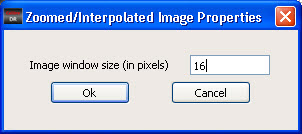

An image window
property is used to set the window to be displayed while displaying
interpolated images (defect window is interpolated in zoomed images)
in the Image Measurement Unit window.
Procedure
- In the Calibre DefectReview
window, click Settings > Set Image
Window Properties.
Figure 1. Image Window Properties
Dialog Box
- Enter the Image window size
in pixels to be displayed while displaying the interpolated images.
- Click Ok.
- This property is used while
displaying the interpolated images (defect window interpolated images)
in Zoomed Images. Refer to section “ZI Images” for more details on zoomed images.